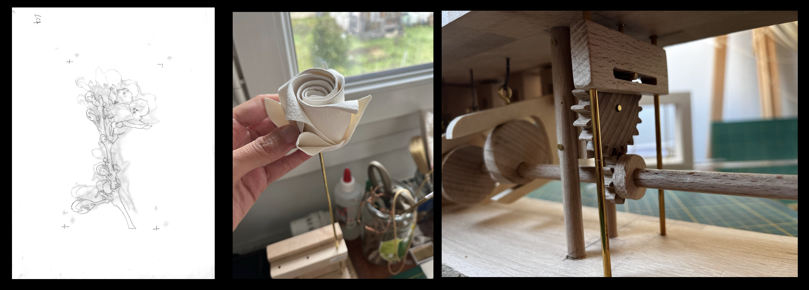
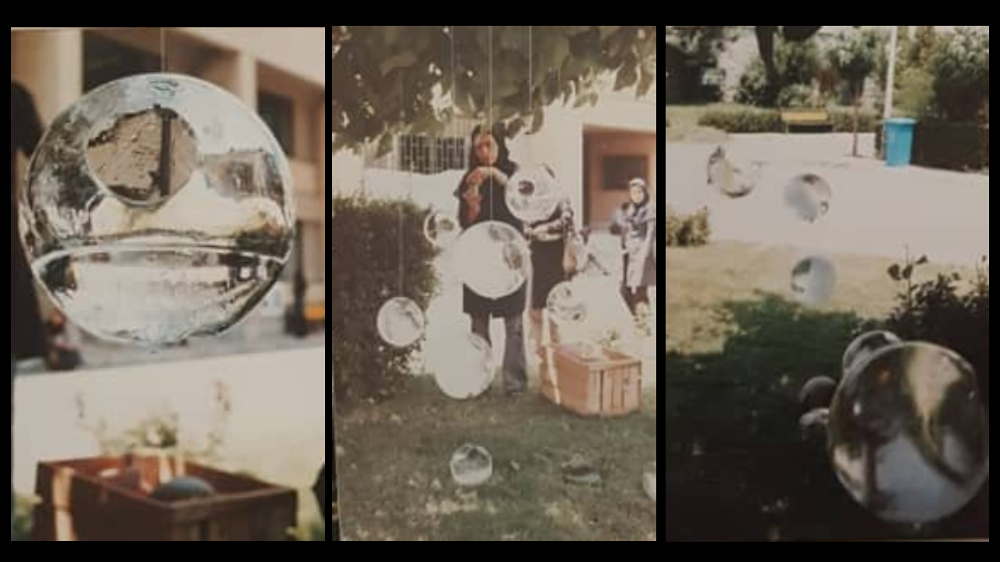
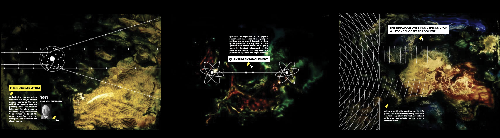

Time-lapse
Documenting temporal change
Artist-researcher with a background in scientific research and artistic conception. My work explores narrative, mechanical systems, and material experimentation, bridging analytical methods and poetic forms.



Time-lapse works developed as part of a practice-led PhD research at École Normale Supérieure, Paris, supervised by Roberto Casati. The project explores how compressing temporal processes through time-lapse transforms observation and visual perception. The research is presented in the dissertation The Philosophy of Time-lapse, Expanded Vision and Concise Observatio